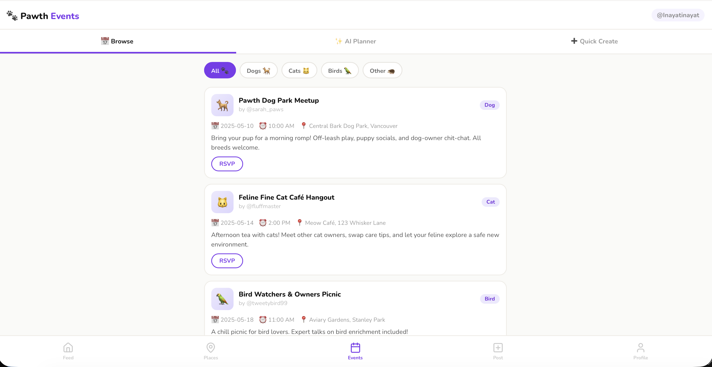
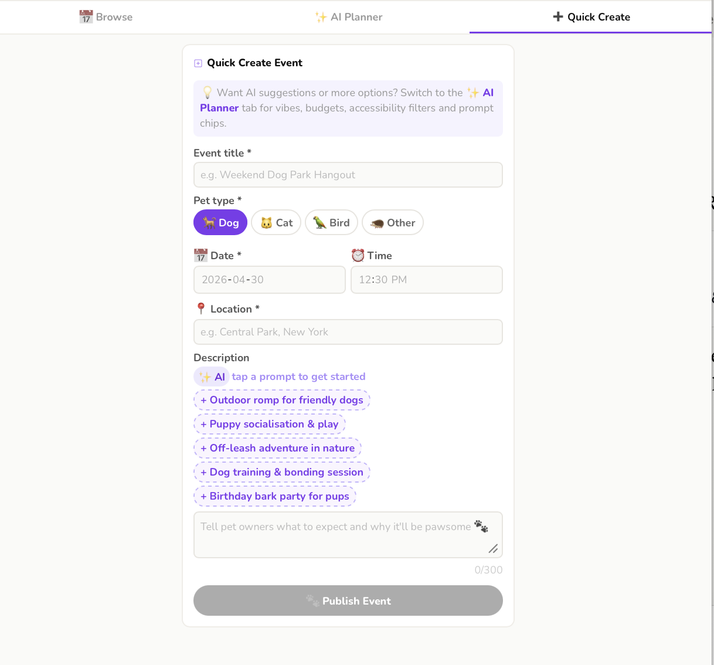
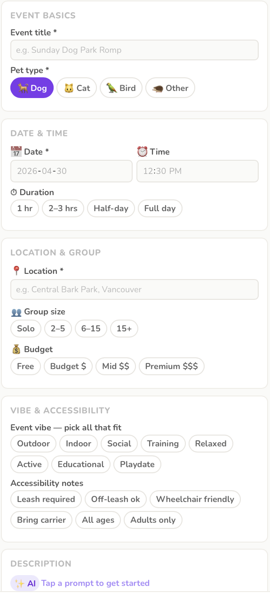
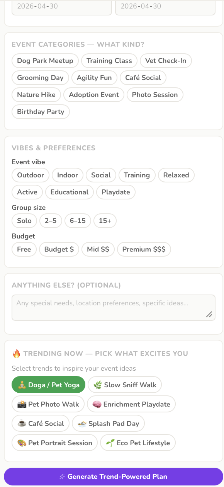

Personal Project — UX/UI Design & Frontend · Spring 2026
A social platform I designed and built solo for pet owners — combining a community feed, pet-friendly maps, AI-powered event planning, and expressive UI into one cohesive, fully responsive web app.
3
User roles
Visitor, Member, Admin
16+
REST endpoints
Full CRUD + auth
7+
Pages designed
Landing to Event Planner
AI
Event planning
Claude API integration
Timeline
Spring 2026
My Role
Solo Designer UX/UI Lead Frontend Dev
Type
Personal Project
Stack
React, Node.js, Express MongoDB, Google Maps API
Focus
UX/UI Design Frontend Engineering
0
Overview
The Problem
Pet owners have no dedicated space to share moments, find community, and discover nearby pet-friendly places — they're scattered across general social platforms that weren't built for them.
No hub
Fragmented pet community
Pet content exists across Instagram, Reddit, and Facebook groups — but none of these platforms are built around pet ownership as the core identity.
Isolated
Social + maps disconnected
Discovering pet-friendly locations and sharing community content required entirely separate apps with no link between the two experiences.
Generic
No pet-owner context
Existing platforms treat pet posts like any other content — no pet type filtering, no location-based discovery, no community-specific design language.
No planner
Events scattered or nonexistent
There was no way for pet owners to plan, discover, or RSVP to pet-specific social events — meetups, dog park hangouts, and adoption drives had no dedicated home.
Design Goals
Design a pet community that actually feels like one
A social feed where pet owners can create posts, like, comment, and save — with a visual identity and UX language specific to pet life, not just repurposed from generic social apps.
Integrate location discovery
Google Maps integration to find nearby pet-friendly places — connected to the same platform, not a separate app.
Build an AI-powered event planner
An event planning page I designed and added as a personal extension — letting users create, browse, and get AI-suggested event ideas tailored to their pet type and preferences.
Keep interactions instant and snappy
Likes, comments, and saves update instantly without page reloads — React state management making every interaction feel native and responsive.
Tools & Stack
ReactNode.jsExpressMongoDBMongooseJWT AuthGoogle Maps APIFigmaREST APIClaude AI API
1
Early Sketches
From Notebook to Browser
Before a single line of code was written, the core pages and interactions were sketched by hand — mapping out navigation structure, content hierarchy, and feature relationships from first principles.
Homepage — feed layout, bottom nav, notification centre
Knowledge sharing page — pet type selector & filter tags
Map page — posts grid, saved collections tab
Profile page — posts grid, saved collections tab
Sketch → Built
Sketched
Pinterest-style masonry feed with image cards, likes, saves, and comments inline
→
Built
Masonry grid dashboard with pet type filter tabs, search bar, and real-time interaction buttons on every card
Sketched
Profile with "Your Posts" and "Saved" tabs — saved posts as a separate collections view
→
Built
Profile page with My Posts / Saved toggle, post and saved count stats, edit profile, and log out
Sketched
Location finder for pet stores, vets, cafes, grooming — category filters in the bottom navigation
→
Built
Google Maps page with 8 category filters (Vet Clinics, Grooming, Shelters, Pet Cafés, Pet Stores, Dog Parks, Boarding, Training)
2
Design Solution
Six Pages, One Unified Platform
Every page addresses a specific gap in the pet owner experience — together they replace the fragmented multi-platform workflow entirely.
Landing Page
The public-facing entry point I designed and built — "Every pet has a story worth sharing." Visitors can browse the feed or join free. No ads, no algorithm games. Just pets.
Landing page — mobile view
Landing page — desktop hero with animated pet emojis
Social Feed / Dashboard
Masonry grid of pet posts with search, pet type filters (All / Dog / Cat / Bird / Other), and inline likes, saves, and comment counts on every card. I built the entire dashboard and all interaction logic.
Feed — masonry grid, pet type filters, search bar, inline interactions
Pet-Friendly Maps
Google Maps integration with 8 category filters and a live results list — click any marker to see the name, rating, and open/closed status.
Maps — Vet Clinics filter active, live results list, marker popup with ratings
Create Post — Gallery Upload
I added gallery upload as a new feature on top of the original URL-only input — users can now pick directly from their device. Two methods, one clean form.
Create post — Upload from Gallery or paste a URL, pet type, caption
New Feature Added
Upload from Gallery
Originally, post creation only accepted a pasted URL. I extended it with a native file picker so users can upload directly from their device — a significantly lower-friction path to sharing a pet photo. The two methods sit side by side in one clean form: gallery or URL, your choice.
Profile Page
User identity, post and saved counts, My Posts / Saved tabs, Edit Profile, and Log Out — all in one view. Fully connected to the users API with real-time data and role badge display.
Switch between your own posts and posts you've saved.
Edit Profile + Log Out
Edit display name and profile picture, sign out.
3
New Feature — Personal Addition
AI-Powered Event Planner
The event planner is a feature I designed and built entirely on my own, beyond the original app scope. Pet owners can discover upcoming events, create their own, and get AI-generated event ideas tailored to their pet type, vibe, and preferences.
Why I Added This
Community needs a calendar, not just a feed
After building the social feed and maps, I noticed a gap — pet owners couldn't plan or find pet-specific events. Dog park meetups, adoption drives, café socials, and training days were all missing a dedicated space. I designed the Event Planner to fill that gap.
Feature Overview
AI Event Idea Generator
Users select their pet type, vibe tags, budget, group size, duration, and accessibility needs — then get AI-generated event suggestions. Prompt chips make it even faster.
Event Creation Form
Members can create their own events — title, pet type, date, time, location, and description — and publish them to the community board for others to discover and RSVP.
Filterable Event Board
Browse all upcoming community events filtered by pet type. Each card shows the event emoji, title, date, time, location, and a short description — clean and scannable at a glance.
RSVP + Ownership System
Members can RSVP to any event and see attendee counts in real-time. Event creators can delete their own events, keeping the board accurate and up to date.
Browse — Event Board

Browse tab — pet type filters, event cards with RSVP, emoji avatars
Quick Create & AI Planner

Quick Create tab — title, pet type, date, AI prompt chips for description

AI Planner — event basics, date & time, location, vibe & accessibility

AI Planner — event categories, vibes, group size, budget, trending picks
UX Design Decisions
Problem
Blank form is intimidating — users don't know what kind of event to create or where to start with ideas
→
Solution
AI idea generator with pet-type prompt chips gets users from zero to a concrete event concept in two taps — before they even open the creation form
Problem
Event boards are hard to scan when everything is listed in a flat, undifferentiated list
→
Solution
Pet type filter tabs + emoji headers on each card make it instantly visual and easy to find what's relevant
Problem
Two different user goals on the same page — discovering events vs. creating them — can create a confusing, cluttered layout
→
Solution
Three distinct zones: AI generator → creation form → event board — a natural top-to-bottom flow matching how users think: inspire → create → browse
AI Integration
Prompt construction
User selections (pet type, vibe tags, budget, group size, duration, accessibility) are assembled into a structured prompt sent to the AI API — returning tailored event concepts.
Prompt chips for speed
Each pet type has a set of pre-written starting prompts — one-tap shortcuts that get users to a useful AI response without having to manually configure every parameter first.
4
Technical Architecture
Full-Stack, End-to-End
React on the frontend, Express + Node.js on the backend, MongoDB for storage. Each layer has a defined responsibility — and data flows cleanly between them.
Frontend — React
Component-based UI with React Router for navigation. State management handles real-time like/comment/save updates without refetching. Role-based route protection at the component level.
Backend — Node.js + Express
RESTful API server with Express routing. JWT middleware protects every authenticated route. Role-checking middleware enforces admin-only endpoints independently of the UI.
Database — MongoDB
Mongoose schemas for Users and Posts. Comments embedded in posts for read performance. Likes and saves stored as arrays for efficient UI state sync.
Schema Design Decisions
Comments embedded in posts
Rather than a separate comments collection, comments are stored inline on the post document — a single read fetches both post and all its comments, reducing query latency for the feed.
Likes and saves as arrays
Storing likedBy and savedBy as username arrays makes it trivial to check if the current user has liked or saved a post — no join needed, just an .includes() check on the client.
Role stored on the User
A single role field on the User document powers the entire RBAC system — clean, simple, and easy to check in both middleware and frontend route guards.
5
API Documentation
16+ Endpoints, Full CRUD
A complete RESTful API — authentication, posts, users, and admin operations — all secured with JWT middleware and role-based access control.
Authentication
Endpoint
Method
Description
/api/auth/register
POST
Register a new user account
/api/auth/login
POST
Login and return JWT token
/api/auth/forgot-password
POST
Generate password reset token
/api/auth/reset-password
POST
Reset password using token
Posts
Endpoint
Method
Description
/api/posts
GET
Fetch all posts (feed)
/api/posts/:id
GET
Get single post detail
/api/posts
POST
Create new post (member)
/api/posts/:id
PUT
Edit own post (member)
/api/posts/:id
DELETE
Delete own post (member)
/api/posts/:id/like
POST
Like / unlike a post
/api/posts/:id/save
POST
Save / unsave a post
/api/posts/:id/comment
POST
Add a comment to a post
Users & Admin
Endpoint
Method
Description
/api/users/profile
GET
Get current user profile
/api/users/profile
PUT
Update profile info
/api/admin/users
GET
Get all users (admin only)
/api/admin/users/:id/suspend
PATCH
Suspend a user (admin only)
/api/admin/users/:id
DELETE
Delete a user (admin only)
/api/admin/posts
GET
Get all posts (admin only)
/api/admin/posts/:id
DELETE
Delete any post (admin only)
6
Access Control
Three Roles, Two Layers of Protection
Role-based access control enforced at both the backend (JWT middleware) and the frontend (protected routes) — so no role ever sees or reaches what it shouldn't.
Visitor
Not authenticated. Can browse and read posts. Cannot like, comment, save, create content, or access profile and admin pages.
Member
Authenticated with JWT. Can create posts, like, save, comment, edit their own content, and update their profile.
Admin
Elevated role. Can suspend and delete users, delete any post, and access the full admin dashboard — blocked from all other users.
Frontend Guard
if (user?.role !== "admin") return <Navigate to="/not-authorized" />
+
Backend Guard
JWT verified on every request → role checked in admin middleware before any admin route resolves
"Designing and building Pawth solo made the connection between UX decisions and frontend code impossible to ignore — they're the same decision, made twice."
— Inayat, Project Reflection
7
Technical Challenges
Five Problems, Five Solutions
Every real-world app surfaces integration problems that docs don't warn you about. Here's what I ran into building solo — and how I solved each one.
01
Authentication state lost on refresh
User login state was wiped on every page reload. Fixed by persisting the JWT to localStorage on login and rehydrating auth state on app load.
02
RBAC enforced at both layers
Frontend route guards alone weren't enough — a savvy user could hit admin API endpoints directly. Backend role middleware was added to every admin route so the API enforces access independently of the UI.
03
CORS blocking frontend–backend communication
The React dev server and Express backend ran on different ports, triggering CORS errors on every API call. Solved by enabling CORS on the backend specifically for the frontend origin.
04
Likes and comments not updating instantly
The feed re-fetched on every interaction, causing a visible flicker. Fixed with optimistic React state updates — making interactions feel immediate.
05
Google Maps dynamic markers and filtering
Getting markers to update when filter categories changed required careful state management between the React component and the Maps API instance — solved by re-rendering markers on every filter state change.
8
Design Decisions
What I Designed & Why
Every page in Pawth was designed and built by me — from the visual identity and component system in Figma, to the React implementation and responsive layout.
Solo — UX/UI + Frontend
Landing page — first impression matters
Designed to immediately communicate the platform's purpose — "Every pet has a story worth sharing." Animated floating pet emojis, two clear CTAs (Join / Browse), and category tag chips give visitors context and momentum before they sign up.
Dashboard — masonry grid for visual density
Chose a masonry grid over a standard card grid to handle variable image ratios naturally. Pet type filter tabs and a search bar let users narrow the feed without leaving the page. Inline likes, saves, and comment counts update optimistically — no flicker, no reload.
Event Planner — AI-first, then form
Designed a three-zone layout: AI generator → creation form → event board. This top-to-bottom flow mirrors how a user actually thinks: get inspired first, then create, then browse what others have made. Prompt chips make the AI generator one-tap fast.
Maps — category filters over free text search
Eight predefined category filters were chosen over a free text search — because pet owners already know what type of place they need, not its name. Dynamic marker rendering on every filter change keeps the map always in sync.
Gallery upload — reducing friction on post creation
The original post form only accepted a URL. Adding a native file picker eliminated that step entirely — users can share a photo straight from their camera roll. The two methods sit side by side in a single clean form.
Profile — clarity over density
The profile page surfaces what matters most at a glance: display name, role badge, post and saved counts, and a clean My Posts / Saved toggle. Edit Profile and Log Out are accessible but not prominent — reducing cognitive load.
The entire Pawth UX — from initial sketches and Figma wireframes through to the final React implementation — was designed and built by me. Every interaction, every layout decision, every component.
9
Reflection
What I Learned
Building Pawth solo — from UX sketches through to a fully deployed React app — taught me that design and engineering aren't separate disciplines. Every visual decision has a technical consequence, and every technical choice shapes the user experience.
Think in systems, not features
This project shifted my perspective from building isolated features to designing complete, scalable systems. Every schema decision affected the frontend; every UI decision created API requirements. The two can't be designed separately.
Security is architecture
Implementing RBAC taught me that access control isn't a feature — it's a first-principles design decision. Role must live on the user model, be verified on the server, and be reflected in the UI. All three layers are required.
State management is UX
The jump from refetching data to optimistic state updates transformed the feel of the app. A 200ms flicker on every like isn't a bug — it's a UX failure. Understanding this made me a better designer and developer simultaneously.
Integration breaks what isolation passes
CORS errors, auth state loss, and API mismatches only surface when frontend and backend connect. Building both sides gave me the debugging vocabulary to trace problems across the full stack without guessing which layer was at fault.
Future Iterations
Event Planner — Maps Integration
Connect the event planner to the Google Maps page — so when a user creates or browses an event, they can immediately see the venue pinned on the map with nearby pet-friendly spots.
Complete Password Reset Flow
The token generation is built — connect a transactional email service (SendGrid or Resend) to complete the reset flow end-to-end.
Pet Profiles
Let users create individual profiles for each of their pets — with breed, age, and a personal feed — deepening the community identity layer.
Real-Time Notifications
WebSocket-based notifications for likes, comments, and event RSVPs — so users know when their content gets attention without refreshing.
Mobile App (React Native)
Port Pawth to a native mobile experience — the social + maps + event planning combination is a natural fit for on-the-go pet owners discovering places and meetups nearby.
The biggest insight was that design and code are the same decision made twice. When you own both sides, every choice becomes intentional — and the product shows it.